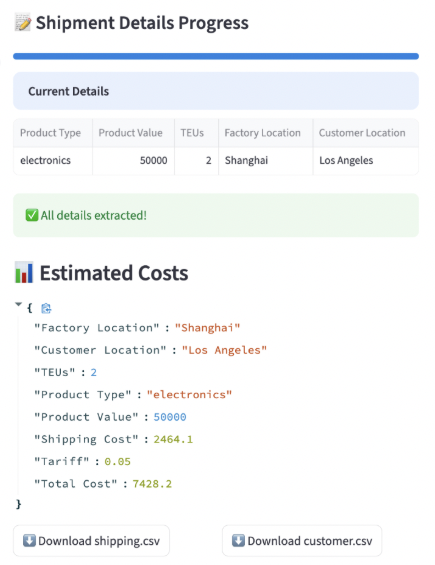

AI for Optimization Programming: Plain English In, Decisions Out
Using language models so that a manager can describe a shipping or supply-chain problem in plain English and get an answer, with an optimization model doing the deciding.
- Active
- 2025–present
- Generative AI
- Optimization
- Supply chains
- Logistics

In plain English
Optimization models make good logistics decisions, but writing one takes training most managers do not have. This project asks whether a language model can sit between the two: take a plain-English request, turn it into the inputs a model needs, and explain the answer back. In 2025 SEAR Lab students first built a warehouse-allocation app on the Gurobi solver, then a chat-based shipment assistant. A user types something like "ship two containers of electronics from Shanghai to Los Angeles"; the assistant extracts the product, value, container count and ports, asks for anything missing, and returns freight, tariff and total cost from tables of port-to-port rates and tariff schedules.
That assistant looks costs up; it does not optimize. The current phase rebuilds it around a real optimization model with Gurobi as the engine, so that the language model handles the conversation and the solver makes the decision.
Main points
- Turns free text into structured model inputs, and asks follow-up questions when something is missing.
- 2025 prototypes: a Gurobi warehouse-allocation app and a shipment-cost assistant, both built in Streamlit.
- Freight rates across major container ports from a commercial rate service; tariffs by product category and country pair.
- Next: replace the cost lookup with an optimization model, so the answer is a decision rather than a quote.
People
- Erick C. Jones Jr., PhD, PEPrincipal Investigator · SEAR Lab directorin
- Srujan ChintaStudent researcher (2025): freight data and model building
- Kushwanth Sai BollepalliStudent researcher (2025): freight data and model building
- Anish JamedarStudent researcher (2025): freight data and model buildingin
- Anand Manohar AgnihotramStudent researcher (2025): tariff data
- Gurusai Ravi Raja Reddy AnkireddyStudent researcher (2025): tariff data
- Sushma AyenampudiStudent researcher (2025): tariff data
- Greeshma GajulaStudent researcher (2025): port data
- Savan Reddy PoduturiStudent researcher (2025): report co-author
- Lohith SurampudiStudent researcher (2025): report co-author
- Ananthakrishnan Valiyaparambil SreekumarStudent researcher (2025): report co-author
- Pratham PatelStudent researcher (fall 2026 team)
- Sadaswi TalluruStudent researcher (fall 2026 team)
Also contributed: Lakshmi Priyanka Bhallamudi, Rajeswari Jeevanrao and Bhavya Sai Sree Yatham (2025), and Anurag Pravinbhai Bhanderi, Darshan Rajubhai Kheni, Srikeerthi Srinivasan, Sathya Sundararajan and Venkata Naga Sri Harsha Achyutuni (an early ChatGPT optimization strand, 2023–24). Profiles marked in link to LinkedIn. More past and present lab members are on the SEAR Lab team page.